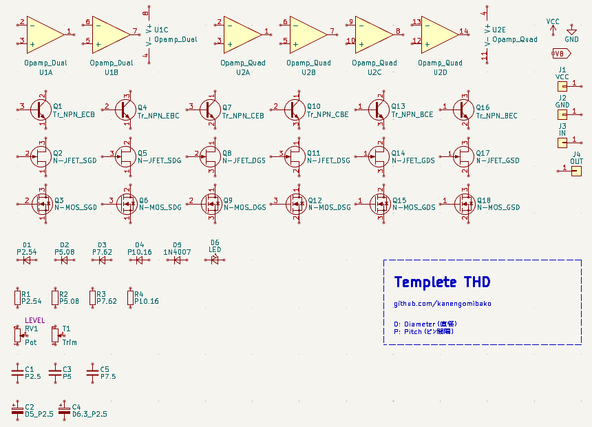
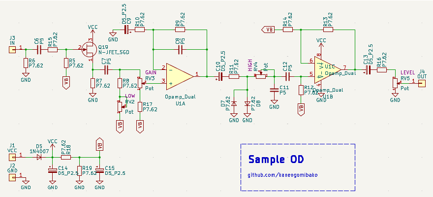
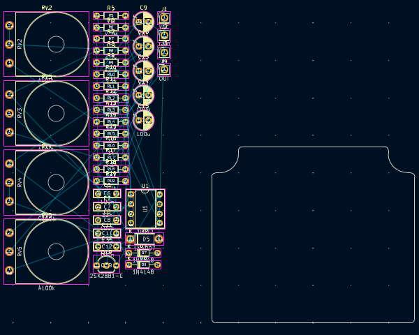
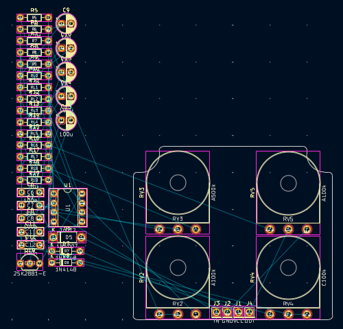
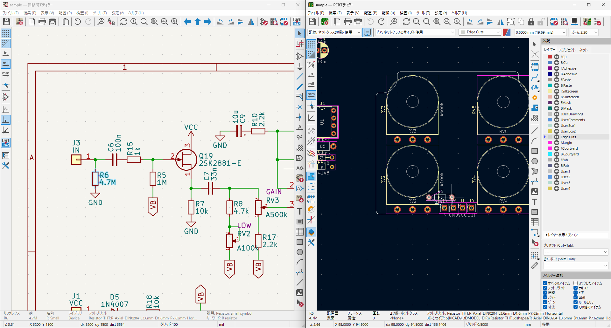
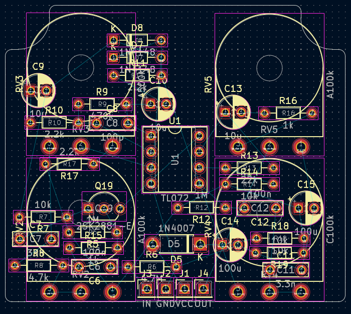
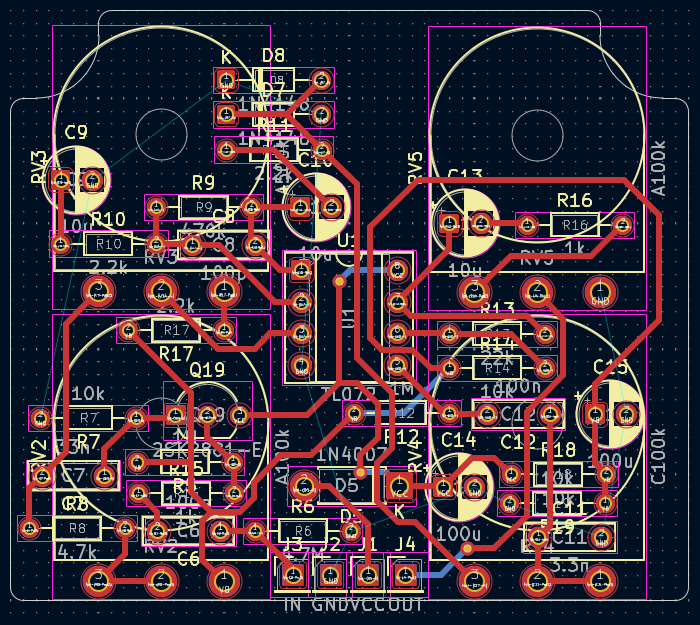
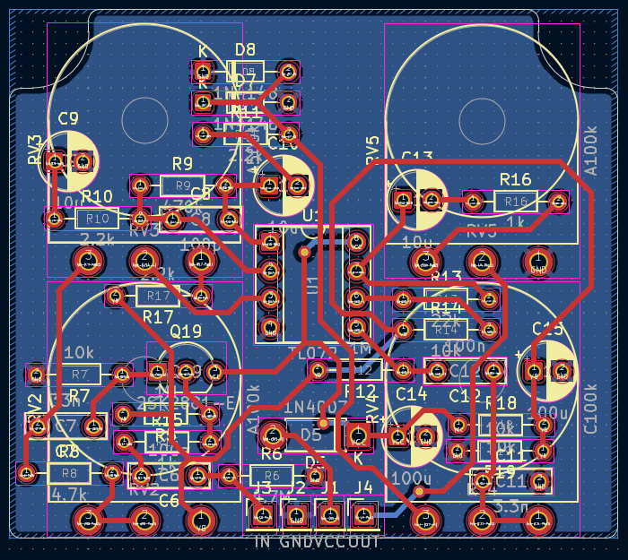
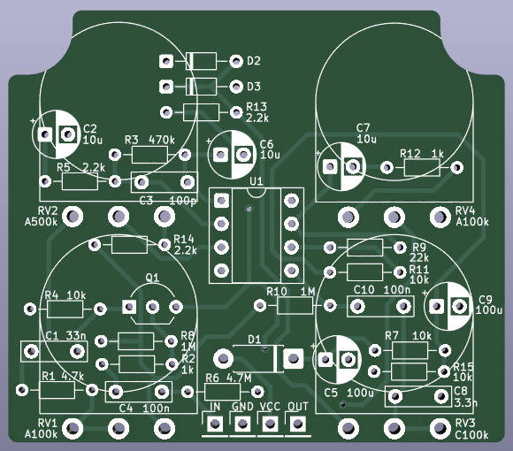

KiCadを使ったエフェクター基板設計
2025年10月18日 カテゴリー：私のエフェクター自作方法
KiCadは無料で使える基板設計ソフトです。スルーホール部品を使ったアナログエフェクターの基板を設計するときのKiCadの使い方や、気を付けていること等をまとめます。
GitHubのKiCadテンプレートファイルを適宜コピーし、全て同じ名前に変更して使用します（→ 3つのファイルをまとめたzipファイルのダウンロード）。
【回路図】
プロジェクトファイルを開いた後、回路図エディターで回路図を編集します。
回路シンボルには、基板上でどのような形をしているかを表す「フットプリント」を割り当てる必要があります。フットプリントは形やピン間隔等いろいろな種類があり、どれを選べばよいかわかりにくいため、テンプレートではフットプリント割り当て済みのシンボルを配置しています。
「P」は穴の間隔で、抵抗は2.54mm（1/10インチ）の倍数、コンデンサは2.5mmの倍数となっていることが多いです。トランジスタ類は、ピン番号1→2→3の順にピン名（E→C→B等）を示しています。必要な部品を複製（Ctrl + D）し、ワイヤー（W）で繋げながら回路図を書いていきます。ホットキーを使うと効率がよいです（→ 編集 E 移動 M 回転 R 水平反転 X 垂直反転 Y）。
テンプレートにない部品は「シンボルを配置（A）」を行います。検索は部品の型番やOpampといったキーワードで絞り込みができます。
複数の部品を選択する場合、左から右にドラッグした選択領域（黄色）では、枠内に完全に入っているシンボルや文字が選択されます。右から左にドラッグした選択領域（青色）では、枠内に一部だけでも入っているものが選択されます。
例としてオーバードライブの回路を描きました。文字の移動や回転も可能で、見た目を整えたい場合は文字の水平・垂直揃えにホットキーを割り当てておくと便利です。
一通り描いたら、以下のツールを実行します。
回路図をアノテーション
回路図の部品の位置に応じて部品番号（R1、C1等のリファレンス）を振り直します。部品番号がバラバラでも動作に支障はないため、必ずしも必要な作業ではありません。後から基板上の部品の位置に応じてアノテーションすることもできます。
フットプリント割り当てツール
シンボルを自分で選んだ場合、フットプリントを割り当てます。部品編集画面や部品表からフットプリントを選択することもできるので、そちらの方が操作しやすいかもしれません。フットプリント検索ではパッケージ名やピン間隔（TO-92、P2.54等）の語句で絞り込みができます。
エレクトリカルルールチェッカー（ERC）
電気的接続がチェックされるので、未接続がないかの確認に役立ちます。未接続で問題ない所には、空き端子フラグを配置（Q）しておきます。
POWER_FLAGという電源シンボルを使うと、ICの電源ピンに電源が接続されているかチェックできます。私は使用していないので「駆動されていない」エラーは無視しています。
【基板】
PCBエディターを開き、回路図から基板を更新（F8）するとフットプリントが配置されます。※ 回路上の部品や接続等を編集したら、その都度更新を行います。
基板の大きさが決まっている場合は、基板外形をEdge.Cutsレイヤーに描画します（とりあえず簡単な四角形でもOK）。グリッドは基本的にミリメートル単位がわかりやすいでしょう（必要時のみインチ単位で調整）。
入出力やポットを配線がしやすいところに配置しておきます。
回路図とPCBのウィンドウを横に並べます。
回路図上でシンボルを選択すると、対応するPCB上のフットプリントが選択されます。ラッツネスト（細い白線）は部品同士のつながりを示すので、それを参考にしながら部品を並べていきます。グラウンド（GND）は、面全体を銅箔にすること（ベタGND）により接続するため、配線経路を気にする必要はありません。
部品の大まかな配置が終わったところです。
スペースに余裕があるので部品の向きをそろえています。
位置の調整と配線を繰り返します。主に表面に配線し、裏面のベタGNDができるだけ分断されないようにします。配線の途中で表裏を行き来するときは、ビア（V）と呼ばれる小さなスルーホールを打ちます。部品や配線のスナップ移動が煩わしいときは、Shiftキーを押しながら移動します。
入力から順に配線していき、電源やバイアスの配線は最後に行うことが多いです。
アナログエフェクターの回路は、低電圧・低電流なので、基本的に特別な注意は必要ありません。しかしながら、ハイインピーダンスな部分（入力部分等）には気をつけた方がよいでしょう。電圧や電流の変化が比較的大きい部分（LFOやLEDの配線等）を入力部に近づけると、ノイズを拾ったりハイゲイン時に発振したりする可能性があります。
配線幅は0.25mm以上、クリアランス（銅箔同士の最小間隔）は0.2mm以上としておけば、基板製造時の不具合が起こることはまずないかと思います。
プリント基板の配線パターンによる音の違いというページで、様々な条件での検証がなされており参考になります。配線幅を太くするメリットは大きくありません。しかしながら、できるだけインピーダンスを下げるという目的で、電源やバイアス電圧の配線を太くするのはよいと思います（→ BOSSエフェクター観察メモ）。また、部品付け替え時の銅箔パターンのはがれや断線を防止するため、太くするのを考慮することがあります。
「塗りつぶしゾーンを描く」でベタGND領域を設定します。
私は裏面のみベタGNDとすることが多いです。表面をベタGNDにすると、配線で細かく分断されてしまい、ビアを細かく打って表裏のGNDを繋げる必要が出てきます。手間のわりにメリットはあまりないと考えています。
文字位置を修正し、3Dビューアーで表示しました。
「テキストと図形のプロパティを編集」で文字の大きさを「幅0.8mm 高さ0.8mm 太さ0.13mm」に一括変更しています。また、部品の値をF.Silkscreenレイヤーに変更し、表示させてあります。
ある程度出来上がったら、以下のツールを実行します。
ツール → 配線とビアのクリーンアップ
余分な配線等を除去してくれます。
編集 → ティアドロップの編集
配線とパッドをティアドロップ状の形に接続することで、断線が起こりにくくなります。必須ではありませんが、発注直前にやっておくとよいでしょう。
デザインルールチェッカー（DRC）
未配線や、クリアランスをチェックします。基本的にはエラーと未配線がなければ問題ありません。
PCB製造業者への発注方法は、他のウェブサイトをご参照ください。
以下によくあるミスを挙げておきますので、一通りチェックされることをお勧めします。
- スルーホールが小さ過ぎてダイオード等の太いリード線が入らない
- トランジスタ、FET、3端子レギュレータのピン配置
- データシートのTop ViewとBottom Viewの見間違い
- 回路図上のポットの上下（1番と3番）
- PCB上のポットの表裏配置
- オペアンプの上下（反転・非反転入力）
- ICの電源ピンの上下（正・負）
- ICやトランジスタのパッケージの間違い（特に表面実装）
- 縦幅が長いDIP-14のIC（TL074等）が他の部品とぶつかる
- シルク文字とビアがかぶってしまい文字が読みにくくなる
- シルク文字を違う部品の近くに配置（R1の値をR2の近くに移動してしまう等）
- 発注直前のゾーンの塗りつぶし、DRC忘れ